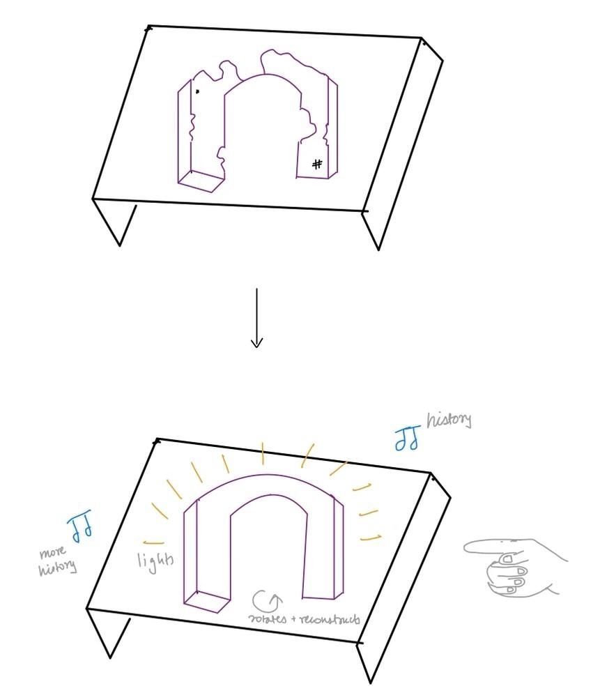
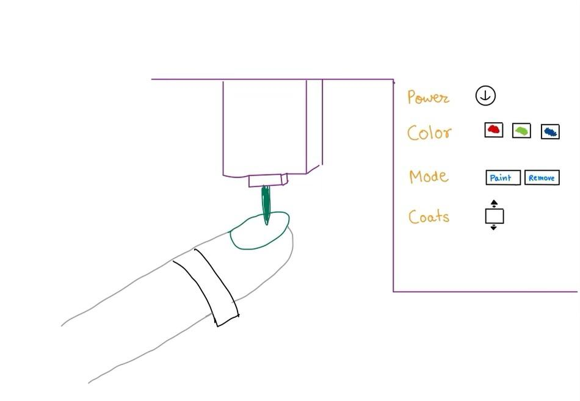

Week 1: Introduction & Documentation
This week I focused on setting up my website for the documentation of my work in this class over the course of the entire semester.
My initial attempt at website design!
Website Design
It was my first time using html and css for website design when I made this website, and I really enoyed how much more gratifying and different this experience felt from my past web design endeavors using online website builders. I was excited to look at the different manipulations I can do with the style of the website to best represent my project and expectations with this class. And I am excited to keep on discovering new css hacks and improving the design and functionality over the course of the semester :)
Final Project Ideas
For my final project, I was interested in the themes of reimagining historical preservation, maximizing sunlight in my room, and saving up capital ($$ and time) and improving functionality in some daily tasks.

#1: My hometown in India has a very deep rooted history within the country which unfortunately has not been preserved or documented. The lack of sufficient historical preservation has kept the last couple of generations, including mine, who were not beneficiaries of much of the oral history of my town or interacted with the historical places in their own capacity, completely removed from the rich history of the town. This has inspired my interest in reconstructing some part of the historical ruins / building a museum functionality / an interactive piece of an artifact to capture and sustain interest. My initial idea is to build a cube that contains a famous historical site in the town (in its present state) and expand it with hand movement/remote control (along with some light manipulation). In this I want the building to expand so as to fill in missing parts of its structure and in a way reassemble the ruin to show how it would have looked like in the past or would look like if it were reconstructed. While exploring these specific parts I also want to add audio narration about the reconstruction process, its role and relevance as well as its applicable history.
# 2: In any living space that I enter, the very first thing I look for is the room for sunlight to enter in the space. Unfortunately, windows and room layouts overall in Kirkland house (perfect otherwise) don’t really optimize for the sunlight in the rooms. To remedy that I use an extensive amount of warm lighting (through string lights, lamps etc) in my room whose light settings I have to keep on modifying, on different days and different hours of the day, to get the perfect amount of light around me. I would like to build a system which would detect the amount of sunlight entering into my room on a particular day (through temperature control perhaps) and adjust the lighting in my string and fairy lights accordingly. An additional feature could be to connect to my speaker automatically and play music based on the weather of the day.

# 3: Ever since moving to college, I have had a hard time finding nail salons that are fast, cost effective and not disappointing [best nails back home for < 1/10th Boston price ;( ] And very recently I came across a clip of a nail robot on UC Berkeley’s campus which inspired me to want to work on a smaller scale version of that: recognising nails and only painting nail polish after color selection. I am worried about how the robot will recognise different nail shapes but would be interested to dive deeper into this question and see if there are some functionalities that might be easier to implement than the others such as cleaning, polish removal, nail designs etc.